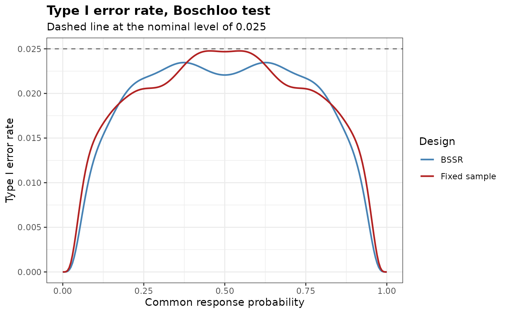

Type I Error Rate of a Blinded Sample Size Re-estimation Design
Source:R/BinaryTypeIErrorBSSR.R
BinaryTypeIErrorBSSR.RdEvaluates the type I error rate of a two-arm trial with a binary endpoint and blinded sample size re-estimation (BSSR) over the common response probability, or over the pooled response probability on the boundary of a non-inferiority hypothesis, together with that of the corresponding fixed-sample design, and locates the largest value of each.
Usage
BinaryTypeIErrorBSSR(
Delta.A,
N1,
N2,
omega = NULL,
r,
alpha,
tar.power,
Test,
restricted = FALSE,
alternative = c("greater", "less", "two.sided"),
tsmethod = c("minlike", "central", "blaker"),
n.grid = 100,
bb.gamma = 0,
effect = c("RD", "RR", "OR"),
ss.method = c("exact", "standard", "null.variance", "alternative.variance"),
ss.Test = Test,
ss.alpha = alpha,
rounding = c("group", "friede-kieser", "total", "nearest"),
N.min = NULL,
N.max = NULL,
n.interim = NULL,
theta = seq(0, 1, by = 0.005),
maximize = c("certified", "refined", "grid"),
margin = 0,
ref.pvalue = FALSE
)Arguments
- Delta.A
Assumed treatment effect, on the scale given by
effect, used to split the blinded pooled proportion into group-specific proportions- N1
Initial sample size of group 1
- N2
Initial sample size of group 2
- omega
Fraction of the initial sample size observed at the interim analysis. The interim size of group 2 is
ceiling(omega N2)and that of group 1 isceiling(r ceiling(omega N2)), so the interim analysis keeps the allocation ratio. Eitheromegaorn.interimmust be supplied- r
Allocation ratio to group 1
- alpha
Level of significance of the final analysis, for the alternative specified by
alternative- tar.power
Target power
- Test
Type of statistical test of the final analysis. Options:
'Chisq','Fisher','Fisher-midP','Z-pool','Boschloo','Blackwelder'or'Farrington-Manning'- restricted
Logical. If
TRUE, the re-estimated sample size is not allowed to fall below the initial sample size. Default isFALSE- alternative
Direction of the alternative hypothesis. Options:
'greater'(default),'less'or'two.sided'- tsmethod
Convention used to construct the two-sided version of the conditional tests, see
BinaryRR. Options:'minlike'(default),'central'or'blaker'- n.grid
Number of grid points used to search over the nuisance parameter of the unconditional tests. Default is 100
- bb.gamma
Confidence level parameter of the Berger-Boos procedure. The default of 0 disables the procedure
- effect
Scale of
Delta.AandDelta.T. Options:'RD'(default) for the risk differencep1 - p2,'RR'for the risk ratiop1 / p2or'OR'for the odds ratio- ss.method
How the sample size is re-estimated from the recovered proportions. Options:
'exact'(default),'standard','null.variance'or'alternative.variance', as inBinarySampleSize- ss.Test
Test whose exact power is used for the re-estimation when
ss.method = 'exact'. Default isTest- ss.alpha
Level of significance used for the re-estimation. Default is
alpha- rounding
How the re-estimated sample size is turned into whole numbers. Options:
'group'(default),'friede-kieser','total'or'nearest'. Only'group'is available withss.method = 'exact'. See Details- N.min
Lower bound on the final total sample size, or
NULL(default) for none beyond the interim total. It can be used to keep the patients who are already enrolled but not yet evaluated at the interim analysis- N.max
Upper bound on the final total sample size, or
NULL(default) for none- n.interim
Interim sample sizes of group 1 and group 2, as a vector of length two. An alternative to
omega- theta
Grid of common response probabilities at which the type I error rate is evaluated. Default is
seq(0, 1, by = 0.005). With a non-zeromargin,thetais the pooled response probability(r p1 + p2) / (1 + r)on the boundary of the null hypothesis, see Details- maximize
How the largest type I error rate is located.
'certified'(default) finds it over the whole interval from the smallest to the largest value oftheta, together with an upper bound, see Details.'refined'refines the largest local maxima on the grid by a one-dimensional optimization between the neighbouring grid points, and'grid'takes the largest value on the grid- margin
Non-inferiority margin on the scale of the risk difference. The default of 0 gives a test of superiority. A value other than 0 tests the null hypothesis
p1 - p2 <= -marginagainstp1 - p2 > -marginwhenalternativeis'greater', andp1 - p2 >= marginagainstp1 - p2 < marginwhen it is'less'. It requiresTest = 'Blackwelder'or'Farrington-Manning', seeBinaryRR. A negative value tests for superiority by more than its absolute value. With a value other than 0 the assumed and the true effects are risk differences (effect = 'RD')- ref.pvalue
Logical. If
TRUE, the maximization over the nuisance parameter of the unconditional tests is refined between the grid points, seeBinaryRR. Default isFALSE. It applies to the final analysis, to the fixed-sample comparator and to the exact re-estimation
Value
An object of class bbssr_tie, a data frame with one row per element of
theta containing:
- theta
Common response probability of the two groups, or the pooled response probability on the null boundary
- p1
Response probability of group 1
- p2
Response probability of group 2
- TIE.BSSR
Type I error rate of the BSSR design
- TIE.TRAD
Type I error rate of the fixed-sample design with sample sizes
N1andN2
The attribute max is a data frame with the largest type I error rate TIE
of each design, the common response probability theta at which it occurs and,
with maximize = 'certified', the upper bound bound of the type I error
rate over the interval given by the attribute interval (otherwise NA).
The attribute reestimation holds the final sample size for every pooled number
of interim responders.
Details
Under the null hypothesis both groups share the response probability theta. The
sample size is re-estimated exactly as in BinaryPowerBSSR, from the
assumed effect Delta.A, and the rejection probability is summed over every
interim outcome and every outcome of the second stage. Exact tests control the type I
error rate of a fixed-sample design, but this property is not inherited by a design in
which the final sample size depends on the interim data, so the rate is worth checking
for every design.
The type I error rate is a polynomial in theta, since both response
probabilities are linear in theta. With maximize = 'certified' the
polynomial is expressed in the Bernstein basis over the interval from the smallest to
the largest value of theta, restricted with a margin to the values at which both
response probabilities lie in the unit interval. The basis polynomials are
non-negative and sum to one, so on any subinterval the polynomial does not exceed its
largest Bernstein coefficient there, and its first and last coefficients are its values
at the two ends. The interval is halved repeatedly by the algorithm of de Casteljau, and
a subinterval is set aside once its largest coefficient exceeds the largest value found
by at most 1e-12. The largest coefficient of the subintervals set aside, reported as
bound, is an upper bound of the type I error rate at every value of theta
in the interval, up to rounding error. With maximize = 'refined' the three
largest local maxima on the grid are refined, which finds the maximum when the grid
separates the local maxima, and with maximize = 'grid' the largest value on the
grid is reported.
With a non-inferiority margin the null hypothesis is p1 - p2 <= -margin,
or p1 - p2 >= margin for alternative = 'less', and the type I error rate
is evaluated on its boundary, as in Friede et al. (2007). The boundary is parametrized
by the pooled response probability theta, and the values of theta at
which a response probability falls outside the unit interval are dropped.
References
Friede T, Kieser M (2004). Sample size recalculation for binary data in internal pilot study designs. Pharmaceutical Statistics, 3(4), 269-279.
Kieser M (2020). Methods and Applications of Sample Size Calculation and Recalculation in Clinical Trials. Springer, Cham.
Friede T, Mitchell C, Mueller-Velten G (2007). Blinded sample size reestimation in non-inferiority trials with binary endpoints. Biometrical Journal, 49(6), 903-916.
Author
Gosuke Homma (my.name.is.gosuke@gmail.com)
Examples
tie <- BinaryTypeIErrorBSSR(
Delta.A = 0.3, N1 = 20, N2 = 20, omega = 0.5, r = 1,
alpha = 0.025, tar.power = 0.8, Test = 'Chisq', ss.method = 'standard',
theta = seq(0.05, 0.95, by = 0.05)
)
print(tie)
#> Type I error rate of blinded sample size re-estimation for a binary endpoint
#>
#> Test : Chisq
#> Alternative : greater
#> Initial size : N1 = 20, N2 = 20
#> Interim size : n1 = 10, n2 = 10
#> Assumed effect : 0.3 (RD)
#> Nominal level : 0.025
#> Grid : 19 values of theta in [0.05, 0.95]
#> Maximum : certified over theta in [0.05, 0.95]
#>
#> Largest type I error rate
#> Design theta TIE
#> BSSR 0.500000 0.02808
#> Fixed sample 0.312886 0.02669
# \donttest{
tie <- BinaryTypeIErrorBSSR(
Delta.A = 0.3, N1 = 39, N2 = 39, n.interim = c(20, 20), r = 1,
alpha = 0.025, tar.power = 0.8, Test = 'Boschloo'
)
attr(tie, 'max')
#> Design theta TIE bound
#> 1 BSSR 0.6261292 0.02345985 0.02345985
#> 2 TRAD 0.4543343 0.02476601 0.02476601
plot(tie)

# }